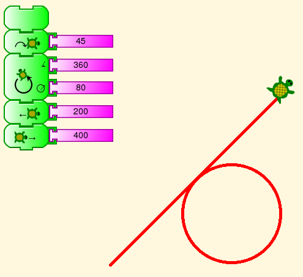
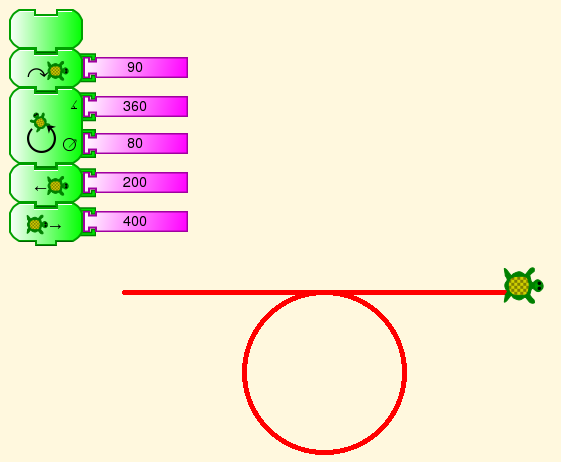
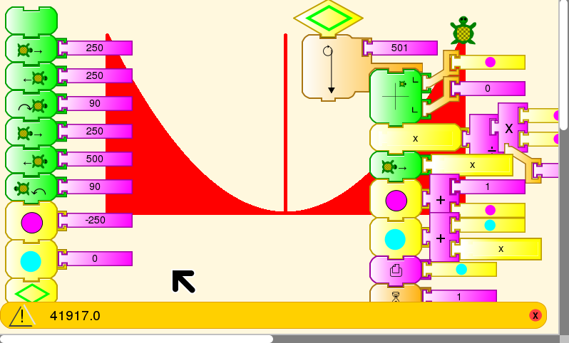
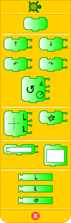
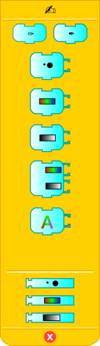
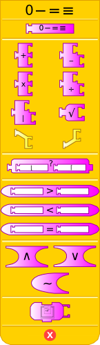
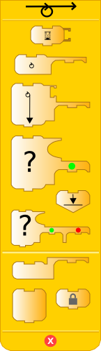
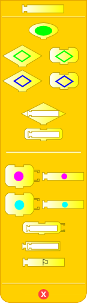
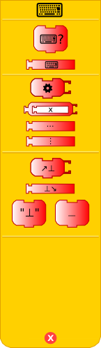
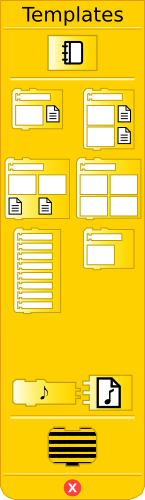

Programming without words¶
Turtle Art blocks are named in the current language. Mokurai has created an alternative language-independent “localization” for TA, using symbols rather than words to name the blocks. He hopes that this will make TA accessible to pre-schoolers, after some period working on You be the turtle. It has not been made part of TA yet, but we are working on it.
Examples¶
Can you read these examples?


Here is a more complicated one.

This example draws X and Y axes and graphs a function. Then it draws lines from the X axis to the curve, and adds the area of the lines. This approximates a Riemann integral. But never mind that. Can you read the blocks?
Glossary¶
This is a listing showing English names for the blocks in the above examples and their icons, either a Unicode character or a graphic. In some cases the same symbol appears on two blocks of different shape, where one is the definition of a subroutine stack or setting of a value in a box, and the other calls the stack or accesses the value.
Turtle¶
Forward →
Back ←
Right ↷
Left ↶
Arc ↻
Angle ∡
Radius circle with arrow from center to edge
Pen¶
Pen Up ✑
Pen Down ✒
Numbers¶
Some of these functions are named with math symbols +-×÷><=, which are not changed.
mod |
random ?
not ∼
and ∧
or ∨
number Not decided.
We are looking at various visual numerals in Unicode.
Flow¶
wait ⌛
if-then Split arrow to Yes and Continue
if-then-else Split arrow to Yes and No, then rejoin to continue
forever ⥁ (In some cases, this will stop at a stop stack block
repeat ⥁ (This block requires a number of repeats to execute.)
while Circle with arrow leaving at top right
until Circle with arrow leaving at bottom left
stop stack Stop sign
Boxes¶
start ↓
store in box Set variable; identified by colored dot
box Get value of variable; identified by colored dot
action Identified by colored lozenge for both definition and use
text “”
Sensors¶
read keyboard ⌨
keyboard (value previously read) ⌨
Templates¶
print Picture of printer
One of the Python programmable blocks has a drawing of a python on it. We keep that, and several other blocks that have icons in Walter Bender’s original version.
Palettes¶
These are the block palettes from a different version of Mokurai’s implementation of Iconic Turtle Art. Can you make sense of them?






